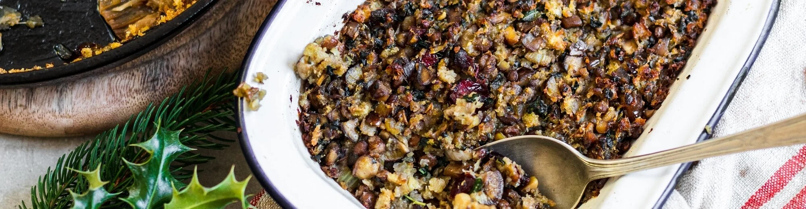

ULTIMATE CHRISTMAS PLANT-BASED STUFFING

ULTIMATE CHRISTMAS PLANT-BASED STUFFING
A feast of all things festive, designed to fit snuggly alongside your Christmas veg. The base is a straightforward sage and onion stuffing, but has been enriched with mushrooms, chestnuts cranberries, and flecks of seasonal kale. Feel free to play around with the nuts, fruit and herbs, as long as you keep the ratios roughly the same. Ideal for much more than just soaking up the gravy.
Ingredients
- 1 red onion, finely diced
- 2 celery stalks, finely diced
- 100g mushrooms, finely diced
- 100g cooked green or puy lentils, roughly mashed
- 125g cooked chestnuts, coarsely chopped
- 40g dried cranberries, coarsely chopped
- 125g crustless sourdough bread
- 2 large black kale leaves
- 1 lemon, finely zested
- 1 garlic clove, finely chopped
- 2 tbsp freshly chopped sage leaves
- a pinch of white pepper
- nutmeg, grated to taste
- Warm 1 tablespoon of oil in a saucepan. Add the onion, celery, mushrooms and a pinch of salt. Fry them gently for 15 minutes, until soft.
- Meanwhile, tip the lentils, chestnuts and cranberries into a large mixing bowl.
- Tear the bread into a food processor. Strip the kale leaves away from the tough stalks. Discard the stalks and tear the leaves into the processor too. Add a small pinch of salt and a dash of olive oil. Blitz until the bread and kale are finely chopped and flecked green. Tip into the mixing bowl.
- When the onions are soft, add the garlic, lemon zest and sage, and cook gently for a final 2 minutes before tipping into the mixing bowl too.
- Season with a pinch of white pepper, a light grating of nutmeg and a squeeze of lemon juice. Mix well with your hands. Taste and tweak the seasoning with more salt, pepper, nutmeg and lemon to your liking.
- Transfer to a snug-fitting oven dish (15cm x 20cm approx.). Press it gently into the dish and furrow the top with a fork. Bake at 190˚C/ Gas 5 for 25 minutes, until piping hot and nicely coloured on the surface.